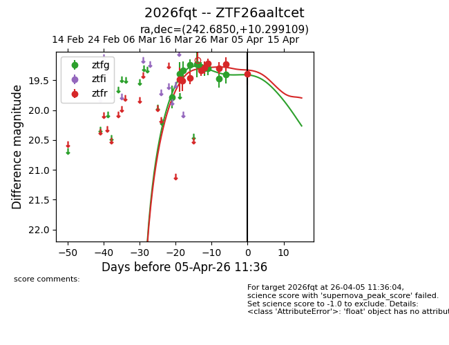
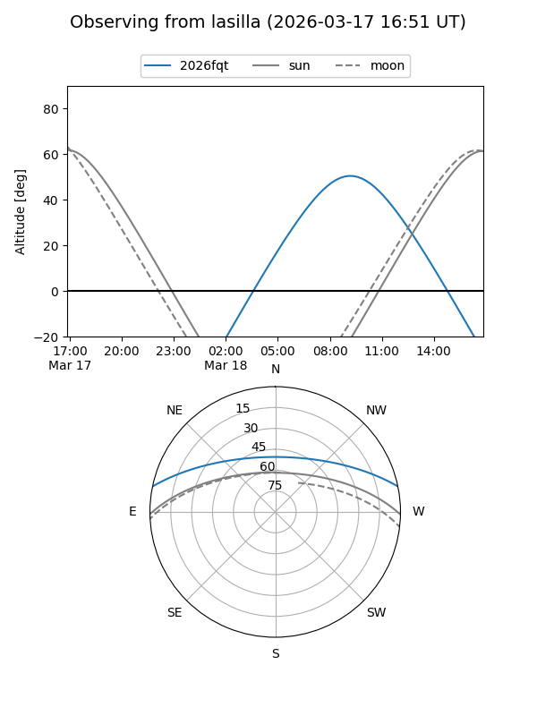
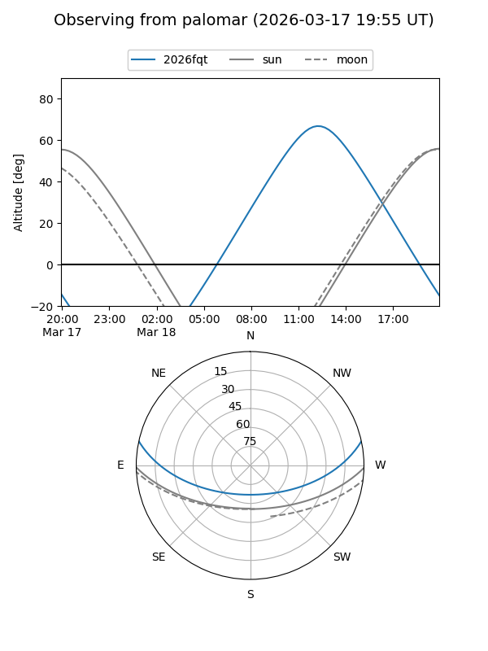
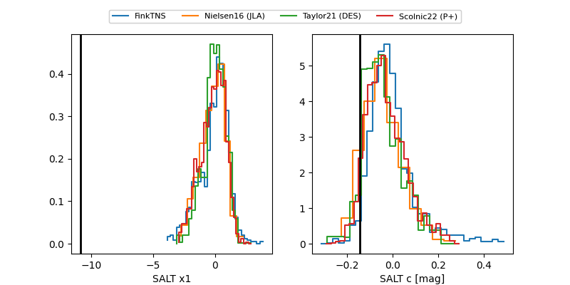

2026fqt
Target 2026fqt at 2026-04-05 11:39
Aliases and brokers:
FINK: link
Lasair: link
ALeRCE: link
TNS: link
YSE: link
alt names
ZTF26aaltcet (ztf,fink_ztf)
2026fqt (tns,yse)
Coordinates:
equatorial (ra, dec) = 242.6850,+10.29911
equatorial (HMS+DMS) = 16:10:44.41,+10:17:56.79
galactic (l, b) = (23.0985,+40.27220)
Flags:
Photometry:
last ztfg=19.41, ztfr=19.40
10 ztfg, 9 ztfr detections
Lightcurve

Visibility


Additional plots
